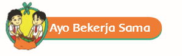
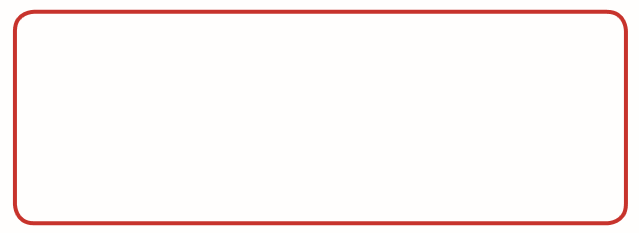

Ayo Bekerja Sama
Activity

Diskusikanlah pertanyaan berikut bersama teman sebangkumu! Apa yang dapat dilakukan ketika sumber energi yang kita gunakan selama ini habis?

Tulislah yang kamu ketahui tentang energi alternatif!
Manusia memerlukan sumber energi lain atau energi alternatif untuk memenuhi kebutuhannya. Sumber energi alternatif berasal dari sumber energi yang dapat diperbarui, contohnya sinar matahari, angin, air, panas bumi, gelombang laut, dan biomasa. Mari kita mencari tahu lebih lanjut.